Timeseries Analysis in Python
This post is about statistical models for timeseries analysis in Python. We will cover the ARIMA model to a certain depth.
Linear Regression and Timeseries
Using a statistical tools such as linear regression with time series can be problematic. Linear regression assumes you have independently and normally distributed data, while, in time series data, points near in time tend to be strongly correlated with one another. This is precisely the property that makes timeseries analysis important as, if there aren’t temporal correlations, it would be impossible to perform tasks such as predicting the future or understanding temporal dynamics.
Linear regression can be used with timeseries when linear regression assumptions hold, for instance when the predicted variable is fully dependent on its predictors and the errors preserve the normality assumption with no autocorrelation. In such a case, the timeseries element is entirely embedded in one of the features.
The Statistics Of Time Series
An excellent introduction on time series can be found here.
Timeseries bring several concepts of interest
- Stationarity: constant statistical properties of the timeseries (mean, variance, no seasonality)
- Self-correlation: correlation between subsequent values of a timeseries
- Seasonality: time-based patterns tha repeat at set intervals
- Spurious correlations: the propensity of timeseries to correlate with other unrelated timeseries especially when seasonality or trends are present.
A log transformation or a square root transformation are two usually good options for making a timeseries stationary,particularly in the case of changing variance over time.
Most of the timeseries have a trend, that is the mean is not constant - trend-stationarity and difference-stationarity. Removing a trend is most commonly done by differencing. Sometimes a series must be differenced more than once. However, if you find yourself differencing too much (more than two or three times) it is unlikely that you can fix your stationarity problem with differencing.
If v(t_i+1) - v(t_i) is random and stationary, then the process generating the series is a random walk, else a more refined model is required.
The test that is mainly used for testing stationarity is called the Augmented Dickey Fuller Test. It removes the autocorrelation and tests for equal mean and equal variance throughout the series. The null hypothesis is the non-stationarity.
The Dickey Fuller test assumes that the time series is an AR1 process (auto-regressive one), that is, it can be written as y(t) = phi * y(t-1) + constant + error. The DF test's null hypothesis is phi >= 1. The alternate hypothesis is that phi < 1. This phi == 1 is called a unit root. A good explanation of unit roots can be found here.
ADF extends the test to ARn series and this null hypothesis is that sum(phi_i)>=1. The difference between the basic DF test and the ADF test is that the latter makes is to account for more lags. The test of whether a series is stationary is a test of whether a series is integrated. An integrated series of order n is a series that must be differenced n times to become stationary.
import random
from statsmodels.tsa.stattools import adfuller
def gen_ts(start, coefs, count, error):
assert(len(start) == len(coefs))
assert(count > len(start))
lst = start + [0] * (count - len(start))
for i in range(len(start), count):
lst[i] = random.uniform(-0.5, 0.5) * error
for j in range (1, len(start)+1):
lst[i] += coefs[j-1] * lst[i-j]
return lst
v = gen_ts([0, 1, 2], [0.5, 0.2, 0.1], 100, 1.0) # sum of coefficients < 1
plt.plot(v)
# automatically test for the best lag to use
# AIC comes from https://en.wikipedia.org/wiki/Akaike_information_criterion
p_value = adfuller(v, autolag='AIC')[1]
print(p_value)
For detecting auto correlation, we introduce two measures:
- The ACF - the autocorrelation between the value at t and t-n, including the intermediary values, (t-1 .. t-n-1). E.g. the effect of prices 2 months ago vs the prices today, including the effect of the prices 2 months ago on the prices 1 month ago and the prices from 1 month ago on today's prices.
- The PACF - the autocorrelation between the value at t and t-n excluding the intermediary values.
The ACF is the Pearson correlation between the values ti and the lagged ti-k values. For the PACF we do a regression on the values of the timeseries at time ti on the ti-k of the form ti=phi_1*ti_-1 + phi_2*ti_-2 + ... + phi_k*ti_-k + error_term - autoregressive lag k. phi_k is our PACF(k).
To plot these a real dataset:
import pandas as pd
lynx_df = pd.read_csv("/content/drive/MyDrive/Datasets/LYNXdata.csv",
index_col=0,
header=0,
names=['year', 'trappings'])
And then transform it to time-annotated series:
lynx_ts = pd.Series(
lynx_df["trappings"].values,
pd.date_range('31/12/1821',
periods=len(lynx_df),
freq='A-DEC'))
lynx_ts.plot()
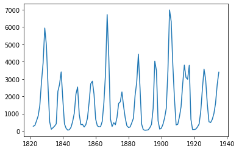
from statsmodels.graphics.tsaplots import plot_acf, plot_pacf
plot_acf(lynx_ts, lags=100)
plot_pacf(lynx_ts, lags=10)
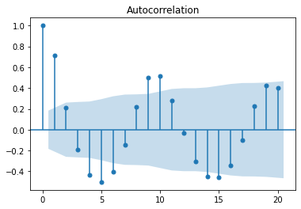
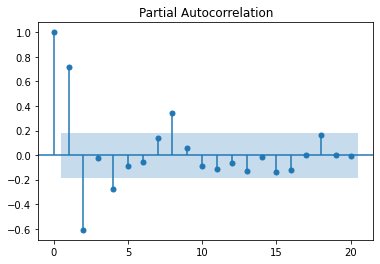
We see in these charts that autocorrelation decreases as we look backwards in the series. This means that we are likely dealing with an auto-regressive process. If we are to build an auto-regressive model for this series we'll probably consider the coefficients for the 1, 2, 4 and 6 lags. The blue bands are the error margin; everything within the bands are not statistically significant. The coefficient with index 0 is always 1, as it is the correlation of the timeseries with itself.
A series can be stationary, that is the mean is 0 and the variance constant with time, but with no lag auto-correlation, no matter the lag value. Such a series is called white noise and it is not predictable.
Let's plot some generated time series to explore the PCF and PACF charts for various cases.
white_noise = np.random.normal(0, 10, size=100)
plot_acf(white_noise)
plt.show()
plot_pacf(white_noise)
plt.show()
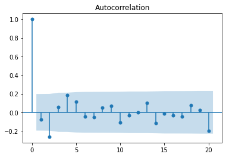
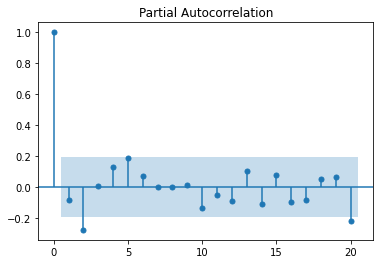
Let's plot a perfect AR(1) model, with no noise.
# ar(1) process
ts2 = [white_noise[0]]
phi_0 = 10
phi_1 = 0.8
k = 0 # 0 = perfectly noiseless, 1 = very noisy
# Expected value of the timeseries (perfect timeseries converges to this value)
miu = phi_0 / (1-phi_1)
print("Expected value: ", miu)
for i in range(1, 100):
# note that without the error term this goes fast to the mean
# AR(1)
ts2.append(phi_0 + ts2[i-1] * phi_1 + k * white_noise[i])
ts2 = np.array(ts2)
plt.plot(ts2)
plot_acf(ts2, lags=40)
plt.show()
plot_pacf(ts2, lags=40)
plt.show()
The time series converges to miu=phi_0 / (1-phi_1) = 50.
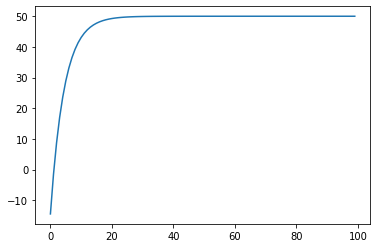

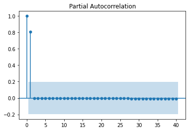
The same expected value can be observed if we increase the noise:
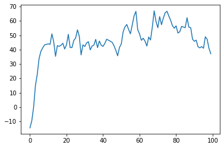
Now, let's plot an MA (moving average) process:
ts3 = [white_noise[0]]
mean = 10
phi_1 = 0.8
for i in range(1, 100):
# MA(1) - coef applied to the previous error
ts3.append(mean + white_noise[i] + theta_1 * white_noise[i-1])
ts3 = np.array(ts3)
plt.plot(ts3)
plot_acf(ts3, lags=40)
plt.show()
plot_pacf(ts3, lags=40)
plt.show()
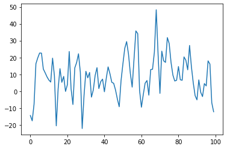
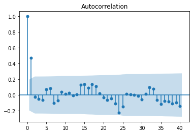
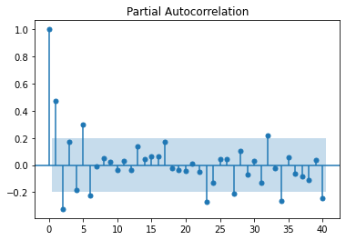
Unlike an autoregressive process, which has a slowly decaying ACF, the definition of the MA process ensures a sharp cutoff of the ACF for any value greater than q, the order of the MA process. This is because an autoregressive process depends on previous terms, and they incorporate previous impulses to the system, whereas an MA model, incorporating the impulses directly through their value, has a mechanism to stop the impulse propagation from progressing indefinitely. This also means that, forecasting beyond the value lag value of q will only return the mean, since there is no more noise to incorporate.
To summarize, when trying to identify what kind of model we try to fit, we have the following rules:
AR(p)- ACF falls off slowly, PACF has sharp drop after lag = pMA(q)- ACF has a sharp drop after lag = q, PACF falls off slowlyARMA(p,q)- No sharp cutoff, neither for ACF nor for PACF
Fitting ARIMA Models
An ARIMA model has 3 parameters:
p: the order of autoregression (the summation of the weighted lags) -ARd: the degree of differencing (used to make the dataset stationary if it is not) -Iq: the order of moving average (the summation of the lags of the forecast errors) -MA
Examples (ARIMA(p, d, q)):
ARIMA (p=1, d=0, q=0) <=> Y(t) = coef + phi_1 * Y(t-1) + error(t)- lag 1 autoregressive modelARIMA (p=1, d=0, q=1) <=> Y(t) = coef + phi_1 * Y(t-1) + theta_1 * error(t-1) + error(t)-ARIMA (p=0, d=1, q=0) <=> Y(t) = coef + Y(t-1) + error(t)is a random walk. The differencing equation,Y(t) - Y(t-1) = coef + error(t), is needed so that the remainingARMAmodel is applied on stationary data. A random walk is not stationary.ARIMA(p=0, d=1, q=1)is an exponential smoothing model
ARIMA Model Parameter Selection
First step is to check for stationarity using the Augmented Dickey-Fuller test. If the data is not stationary, we need to set the d parameter.
The second step is to set the p and q parameters by inspecting the ACF and PACF plots, as described before.
To avoid over-fitting, a rule of thumb is to start the parameter selection with the plot that has the least amount of lags outside of the significance bands and then consider the lowest reasonable amount of lags. The ARIMA model is not necessary unique, as we will see in the following example where we start from a complex timeseries which can be approximated very well with a simpler model.
Let's generate some data:
arma_series = [white_noise[0], white_noise[1]]
m = 5
phi_1 = 0.4
phi_2 = 0.3
theta_1 = 0.2
theta_2 = 0.2
# AR(2) I(0) MA(2)
for i in range(2, 100):
arma_series.append( \
m + \
arma_series[i-1] * phi_1 + arma_series [i-2] * phi_2 + \
white_noise[i] + theta_1 * white_noise[i-1] + theta_2 * white_noise [i-2])
plt.plot(arma_series)
plt.show()
adf = adfuller(arma_series, autolag='AIC')[1]
print(adf) # stationary
arma_series = np.array(arma_series)
# fit the model
plot_acf(arma_series)
plt.show()
plot_pacf(arma_series)
plt.show()
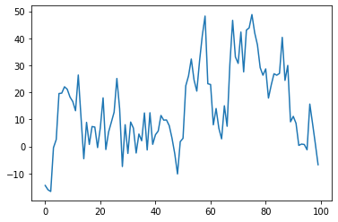
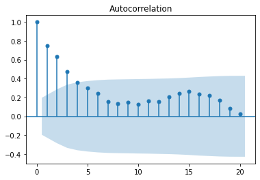
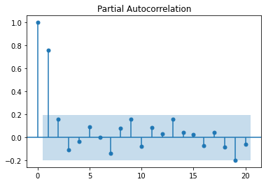
We observe a sharp cutoff in the PACF after lag 1 and slow decay in the ACF. This leads to try to fit an ARIMA(1, 0, 0).
from statsmodels.tsa.arima.model import ARIMA
m = ARIMA(arma_series, order=(1,0,0))
results = m.fit()
plt.plot(arma_series)
plt.plot(results.fittedvalues, color="orange")
print(results.arparams) # 0.78
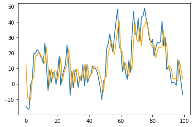
A pretty good approximation of the initial complex model can be obtained with an AR(1) model. Let's analyse the residuals to see how much information did we capture in our model and if there are autoregressive behaviors we have missed. In our case residuals are normally distributed as seen in the histogram and proven by the Shapiro test and in the ACF and PACF plots we do not see any autoregressive tendencies we might have missed.
resid = arma_series - results.fittedvalues
plt.hist(resid)
import scipy.stats as stats
# visual inspection of the residuals
plt.hist(resid)
# Shapiro test for normality
stats.shapiro(stats.zscore(resid))[1]
# no autocorrelation
plot_acf(resid)
plt.show()
plot_pacf(resid)
plt.show()
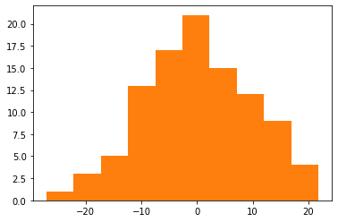
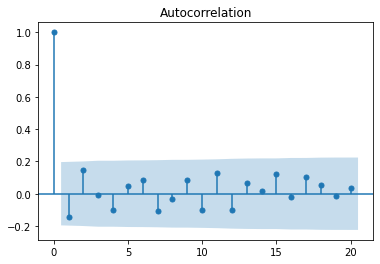
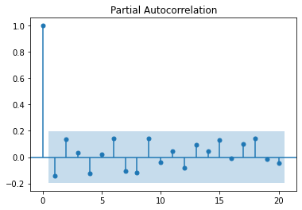
Returning to our Lynx timeseries which was shown earlier, let's train an ARIMA model and see how it fits.
from statsmodels.tsa.arima.model import ARIMA
m = ARIMA(lynx_ts, order=([1], 0, 1))
results = m.fit()
plt.plot(lynx_ts)
plt.plot(results.fittedvalues, color="orange")
print(results.arparams)
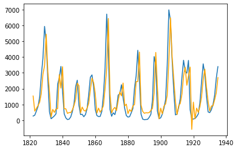
Exported notebook is here
A good introductory video here